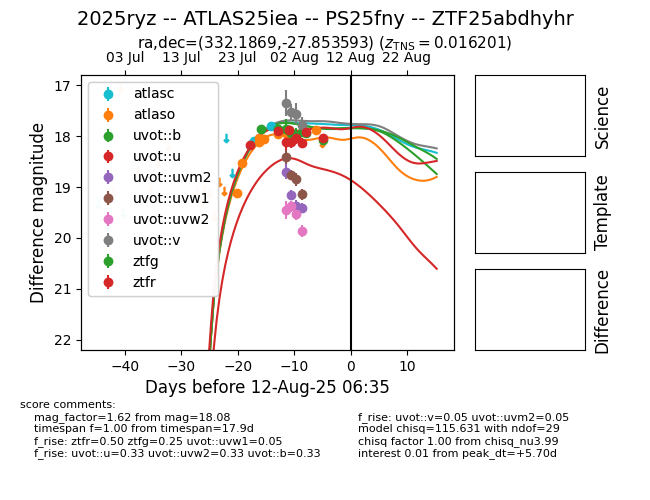

Target 2025ryz at 2025-08-12 01:49, see:
FINK: fink-portal.org/2025ryz
Lasair: lasair-ztf.lsst.ac.uk/objects/2025ryz
ALeRCE: alerce.online/object/2025ryz
TNS: wis-tns.org/object/2025ryz
YSE: ziggy.ucolick.org/yse/transient_detail/2025ryz
alt names
ZTF25abdhyhr (ztf,fink)
2025ryz (tns,yse)
ATLAS25iea (atlas)
PS25fny (panstarrs)
coordinates:
equatorial (ra, dec) = (332.1869,-27.85359)
galactic (l, b) = (22.1203,-54.08098)
photometry
last atlasc=17.80, atlaso=17.89, uvot::b=17.91, uvot::u=18.13, uvot::uvm2=19.41, uvot::uvw1=19.14, uvot::uvw2=19.86, uvot::v=17.79, ztfg=18.08, ztfr=18.04
2 atlasc, 9 atlaso, 4 uvot::b, 4 uvot::u, 4 uvot::uvm2, 4 uvot::uvw1, 4 uvot::uvw2, 4 uvot::v, 5 ztfg, 5 ztfr detections
